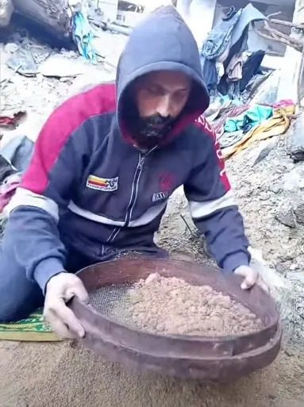
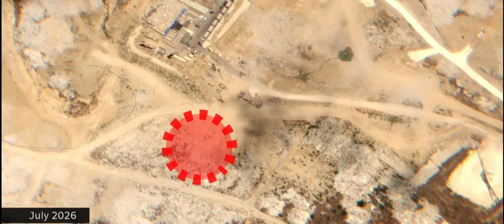
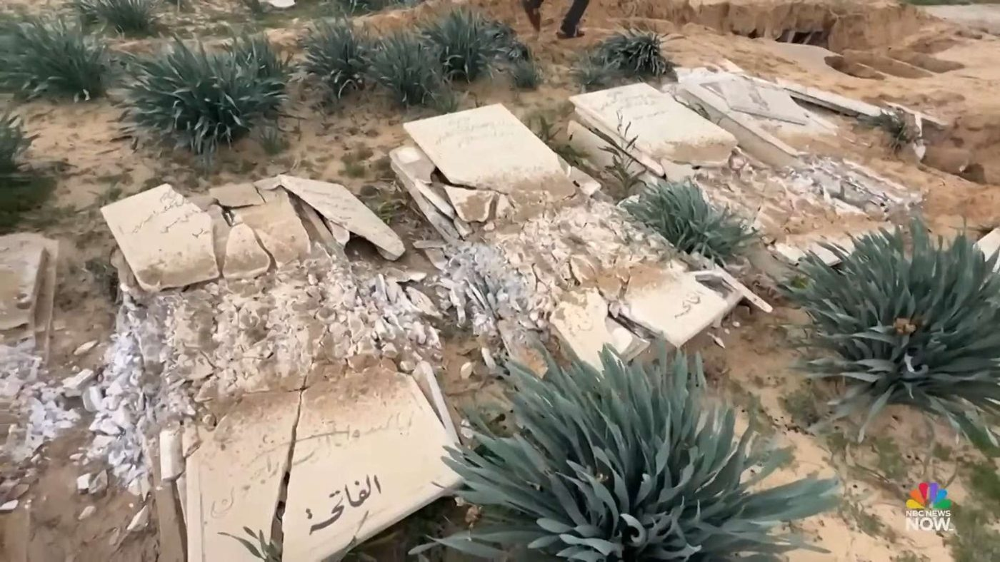
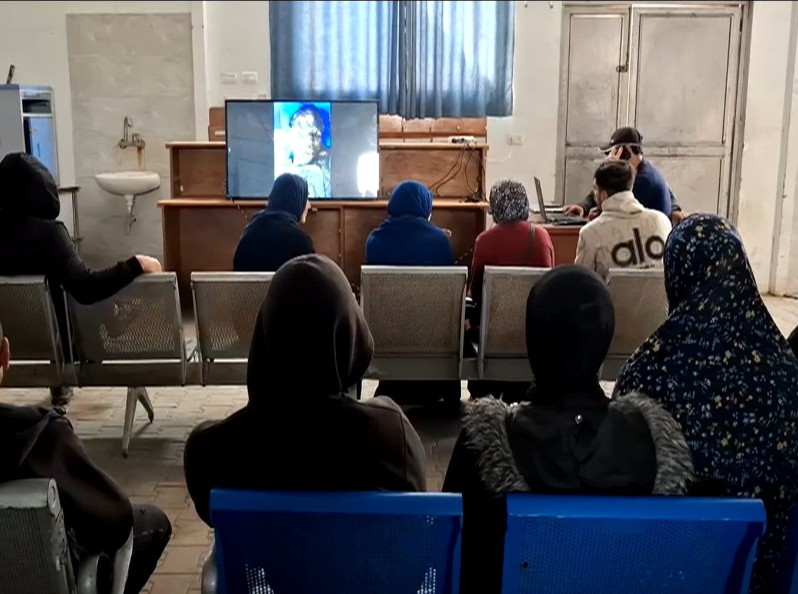
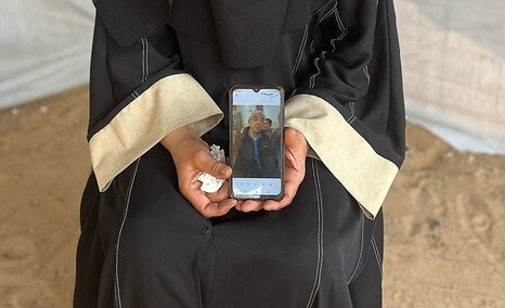
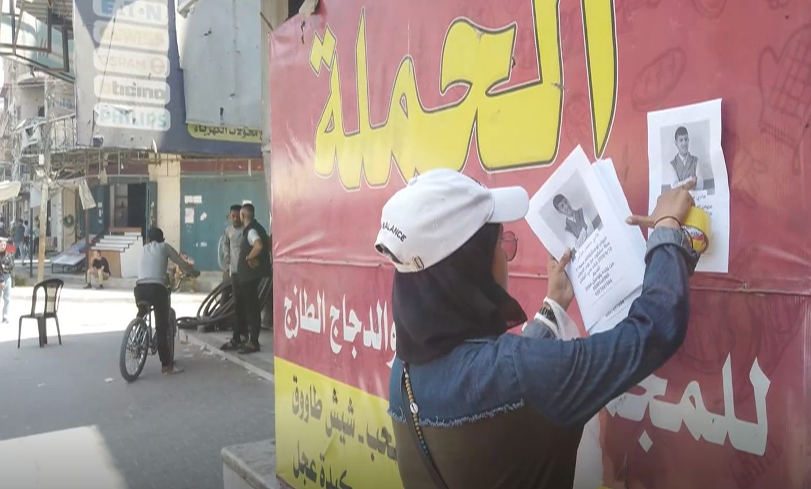
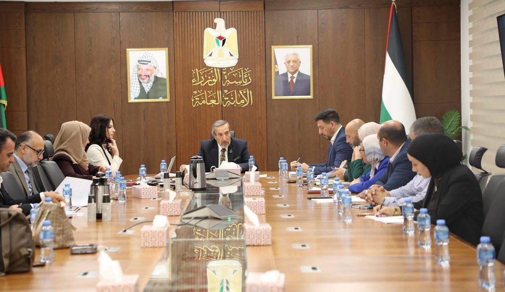

people missing in the Gaza Strip since October 2023
The situation
Since October 2023, more than 10,000 people in the Gaza Strip have gone missing. Most are believed to lie beneath the rubble of destroyed homes. Others were separated from their families during displacement, are presumed detained, or were buried without identification. Nearly half of the recorded cases are women and children.
Recovery is slow: most remains have been recovered by hand, as the entry of heavy machinery for removing the rubble has been refused.
Who the missing are
Under the rubble
Persons believed buried in destroyed buildings
Separated in displacement
Persons separated from their families during displacement
Presumed detained
Persons whose families believe they were detained
Buried unidentified
Remains buried in temporary or unmarked graves without identification
Forcibly disappeared
Persons whose fate and whereabouts are concealed
Impact on families
Families live with ambiguous loss: they can neither grieve nor move on. Without confirmation of death they also face legal uncertainty over guardianship of children, maintenance, inheritance, marital status and property, alongside economic hardship. Unaccompanied children and female-headed households are particularly affected.
Why time matters
Rubble clearance is necessary for reconstruction to begin, but when a collapsed building is a potential forensic scene, documenting the site before it is cleared is the only way to preserve the information needed to identify the missing persons. Collecting reference samples from a displaced population in order to match the DNA with human remains takes years, not months. There is an urgent need to start the process where access is available, while continuing to advocate for access to all areas where there might be human remains.
Why so many cases remain unresolved
Determining the fate of missing and forcibly disappeared persons in Gaza remains an immense humanitarian challenge. Ongoing destruction, vast quantities of rubble, damaged burial sites, limited forensic and DNA identification capacity, communication disruptions, restricted access to affected areas, and uncertainty surrounding detention have all complicated efforts to locate, recover, identify and account for the missing. As a result, thousands of families still live without answers, unable to learn the fate of their loved ones or to exercise their right to truth, dignity and closure.
61 million
tonnes of debris generated by the destruction
~65%
of the territory under access restrictions

01 / 06
Buried beneath the rubble, with limited recovery capacity
Many missing persons remain buried under the rubble of destroyed homes, shelters and public buildings. The entry of heavy machinery has been refused and most remains have been recovered by hand, leaving families with no option but to search unstable rubble themselves, at risk to their own safety.
More than two years after his home was destroyed, Mahmoud Hammad, a father in Gaza City, was still sifting through its rubble with a sieve, searching for the remains of his wife and children.

02 / 06
Restricted access and loss of evidence
In many areas where the Israeli military is deployed, the land continues to be levelled by bulldozers with no regard for the dead beneath the rubble. Human remains, personal belongings and critical evidence are being lost, making it harder for families to learn the fate of their relatives and foreclosing future efforts to establish the truth.
In Shuja'iyya, Gaza City, Dalal Faraj has not heard from her husband, Taha, or her 16-year-old son, Nasr, since a strike hit their home on 8 October 2023. In March 2026, satellite imagery captured rubble being cleared in the neighbourhood, where a military base now stands.

03 / 06
Emergency burials, unmarked graves and damaged cemeteries
Many victims were buried without proper documentation, in temporary or mass graves, making identification and family tracing extremely difficult. Cemeteries have also been disturbed: families who buried their relatives can no longer find their graves, and remains are harder to identify.
Families have been unable to locate their relatives' graves in Al-Batsh Cemetery, Gaza City, after it was excavated by the Israeli military with heavy machinery and bulldozers in January 2026.

04 / 06
Limited identification capacity
There are no DNA testing facilities in Gaza, and, according to the UN Human Rights Office, Israeli restrictions on items such as DNA kits have impeded identification. Beyond the thousands of remains awaiting identification, Israel has returned the bodies of 360 Palestinians under the ceasefire arrangements; by the end of January 2026, families had identified only about 100 of them, according to the Ministry of Health.
At Al-Shifa Hospital in Gaza City, families gather in a large hall to view photographs of returned bodies on a screen, hoping to recognise a relative by clothing or other identifying marks.

05 / 06
Undisclosed detention and enforced disappearance
Many families do not know whether a missing relative has been displaced, killed or is being held in detention. With ICRC visits to places of detention remaining suspended by the Israeli authorities, relatives remain without information on the fate and whereabouts of their loved ones.
In October 2023, a man from Qizan an-Najjar, in southern Gaza, left home for afternoon prayer at the neighbourhood mosque and never returned. More than two years of inquiries by his family have produced no answer.

06 / 06
Communication blackouts and lost records
The collapse of communications and records systems, including the civil registry, has made it difficult for families, authorities and humanitarian organisations to register cases, share information and coordinate searches.
In June 2025, Anwar Hawas was searching every day for her 17-year-old brother, Hadi, who had left home three weeks earlier and not returned. With no internet or phone service, she posted his photograph on walls in Gaza City and searched the streets.
Why the Register comes first. Together, these factors delay families' right to know. Information gathered from families now is what will make identification possible later.
The National Team
The National Team for the Follow-Up of the Missing Persons File was established by Council of Ministers Decision No. 19/95/01 of 27 January 2026, adopted under the Amended Basic Law and the regulations governing the Council of Ministers and government committees. It is the competent national authority and the single national reference point for the missing persons file.

- Mandate
- Humanitarian: to establish the fate and whereabouts of every missing and forcibly disappeared person, and to support their families
- Scope
- All missing and forcibly disappeared persons, without categorical exclusion, whatever the circumstances or date of disappearance
- Chair
- H.E. the Minister of Justice, with the Ministry of Justice as Rapporteur
- Members
- Line ministries, the judiciary, national institutions and civil society
- Plenary
- Meets monthly; adopts the Team's decisions, plans and protocols
- Secretariat
- A Permanent Technical Secretariat hosted by the Ministry of Justice
- Subcommittees
- Six specialised subcommittees carry the technical work between plenary meetings, each with a lead entity and a named coordinator
The six specialised subcommittees
Documentation and the Electronic Platform
Ministry of JusticeFocus: Unified national platform for reports; unification of existing databases; data protection
Forensic Medicine and Identification
Ministry of Justice, with the Ministry of HealthFocus: Forensic and identification protocols; dignified handling and return of remains; family DNA reference sampling
Legal and Legislative Affairs
Ministry of JusticeFocus: Legal status of the missing and their families; certificates of absence; protection of burial sites
Family Support and Psychosocial Work
Ministry of Social DevelopmentFocus: Integrated psychosocial, social, legal and economic support; family representation in the Team's work
International Cooperation and Partnerships
Ministry of Justice, with the Ministry of Foreign Affairs and ExpatriatesFocus: Partnerships, technical exchange and the engagement of international expertise
Media and Communications
Ministry of JusticeFocus: Public information; communication with families; protection of families' privacy
Subcommittee members include the Ministries of Interior and Health, the High Judicial Council, the Public Prosecution, the Diwan of the Chief Islamic Justice, the Independent Commission for Human Rights, the Palestine Red Crescent Society, the Detainees and Ex-Detainees Commission, the Palestinian Central Bureau of Statistics, and civil society organisations. Family representatives are co-opted to the Family Support subcommittee.
Guiding principles
Families at the centre
Families are rights-holders, not beneficiaries. They take part in the search and are informed first, directly and in person
Humanitarian purpose
The search for answers comes first and is the sole purpose of the Team
Rigorous documentation
Every case recorded once, to a common standard; every piece of information carries its source and date
One national effort
National and international efforts are unified and coordinated through the Team
Equal treatment
Priority is never set by the prominence of a case, media attention, the standing of a family or political affiliation
How the work is done: five phases
The work follows five phases. They are sequential for any single case or site, but run in parallel across the file as a whole. The first two phases do not depend on access to sites and can proceed now.
- 1
Information gathering
Can proceed nowWhat it involvesRegistration of cases, a single national case number and file, consolidation of existing records, field documentation
When it runsFrom adoption, continuously
- 2
Family reference sampling
Can proceed nowWhat it involvesCollection of reference DNA samples from relatives, with informed consent, so that a reference exists before remains are recovered
When it runsIn parallel with Phase 1
- 3
Site assessment
What it involvesA registry of burial sites built from Civil Defence and Red Crescent recovery logs, Ministry of Health burial records, imagery and testimony; protection and prioritisation of sites
When it runsRegistry now; field survey when access permits
- 4
Recovery and examination
What it involvesRecovery of remains with full documentation and chain of custody; forensic examination by specialists
When it runsOn access and capacity
- 5
Identification and return
What it involvesMatching of findings with family information and DNA; a reasoned identification decision; family informed first; dignified return for burial
When it runsAs Phase 4 produces results, and for cases resolved without recovery
Commitments to families
The right of families to know the fate and whereabouts of their relatives is recognised in international humanitarian law. It is a right of the family itself. It is not satisfied by the passage of time or by general acknowledgment, but by an answer about a particular person, given to that person's family. Accordingly:
- The family is informed first, directly and in person, before any other party.
- Identification is a formal, reasoned decision entered in the Register; it is never assumed.
- No exhumation or analysis is carried out without the family's knowledge and engagement.
- No case is closed for lack of a result; every family receives a written outcome.
- No case-specific information is disclosed through public channels or the media.
- Sample collection and notifications are always accompanied by psychosocial support.
If someone in your family is missing
- Keep photographs, identity documents, medical and dental records, and descriptions of clothing and personal effects.
- Note when and where your relative was last seen, and who was with them.
- Report the case once, through the official national channel, so that it is recorded in the National Reference Register.
- If asked, give a reference sample: it will be used only to identify your relative.
Register a missing person from Gaza
Help us document the missing. Every report is recorded once, in the National Reference Register.
Register a missing personInternational cooperation
Partner support is organised around the six subcommittees and channelled through the National Team. The Team works with the ICRC, OHCHR, UNDP (including the Sawasya programme), UNICEF, UN Women, the European Union, Switzerland, ICMP and ICTJ.
The Team has signed a Memorandum of Understanding with the Committee on Missing Persons in Cyprus. Its methodology draws on the experience of national search mechanisms that have carried out this work at scale, including in Cyprus, Bosnia and Herzegovina, Colombia and Kosovo, and follows ICRC guidance on the dignified handling of the dead.
ICRCOHCHRUNDP · SawasyaUNICEFUN WomenEuropean UnionSwitzerlandICMPICTJCommittee on Missing Persons in Cyprus
Where support is needed now
National database
The Register, its electronic platform and field documentation teams
Forensic capacity
Identification facilities, refrigeration and equipment in Gaza, and specialised training
DNA collection
Reference sampling from families, entry of sampling kits and laboratory capacity
Site documentation and protection
Geospatial analysis and protection of sites before clearance and reconstruction
Family support
Psychosocial services, legal assistance and accessible outreach
Key dates
Mass displacement in Gaza; reports of missing persons rise sharply
Civil Defence teams recover more than 630 bodies and remains from beneath destroyed buildings (to September 2026)
Council of Ministers establishes the National Team
Memorandum of Understanding signed with the Committee on Missing Persons in Cyprus
Third meeting of the National Team, with international partners
Technical meeting with UNDP and OHCHR on forensics and the national database